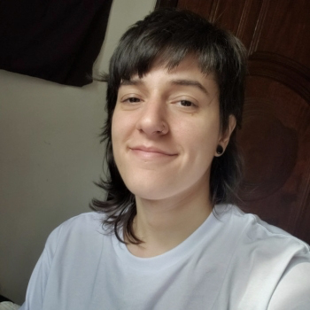
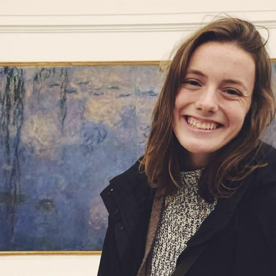
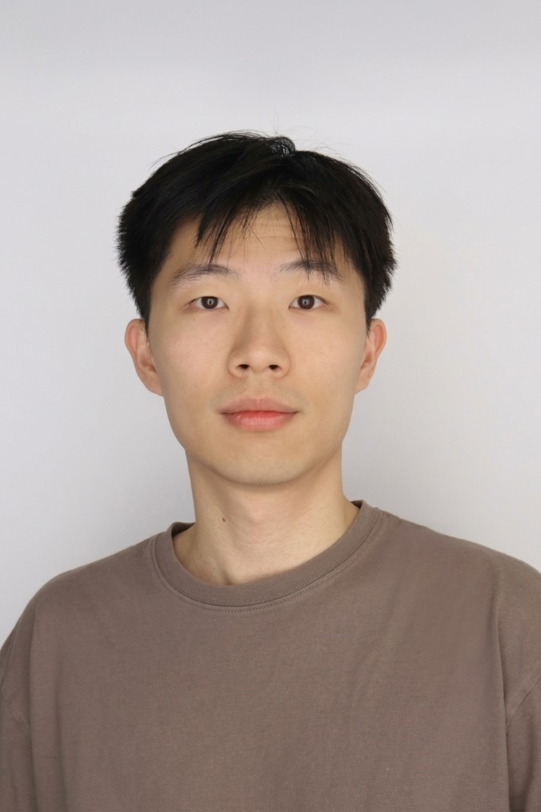
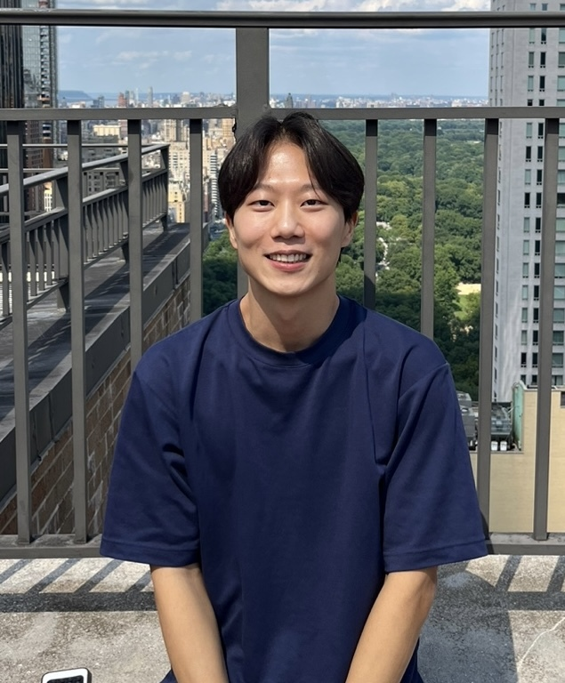

People
Current students, collaborators, and alumni.



Alumni
Cecilia Bolaños
IEEE SigMA Mentee, 2026.
PhD student in Computer Science,
Facultad de Ciencias Exactas y Naturales,
Universidad de Buenos Aires.
Atilay Kucukoglu
Research Assistant, 2025-2026.
M.S. Music Technology,
Steinhardt, NYU.
Next: Orbit Creative Technologies.
Tai Wan Kim
Research Assistant, 2025.
M.S. in Computer Science,
Courant, NYU.
Next: Student at NYU.
Emiliano Acevedo Piotti
IEEE ME-UYR Mentee, 2024.
Bs. Eng. in Electrical Engineering,
Facultad de Ingeniería,
Universidad de la República.
Next: R&D Engineer at BMAT.
Tanmay Khandelwal
Research Assistant, 2023-2024.
M.S. in Computer Science,
Courant, NYU.
Next: Data Engineer at Amazon.
Liqian Zhang
Research Assistant, 2023-2024.
M.S. Integrated Design & Media,
Tandon, NYU.
Next: AI developer at Atly.
Ana Elisa Mendez
Research Assistant, 2023.
PhD in Music Technology,
Steinhardt, NYU.
Next: Research scientist at Apple (via Volt).
Pauline Wee
Undergraduate Research Assistant, 2023.
M.S. in Computer Science, NYU.
Next: Design engineer at DAIR.
Harsh Palan
Research Assistant, 2022-2023.
M.S. Integrated Design & Media,
Tandon, NYU.
Next: Creative technologist at Madwell.
Saksham Singh
Research Assistant, 2022-2023.
M.S. in Computer Science,
Courant, NYU.
Next: PhD Candidate at the University of Texas at Dallas.